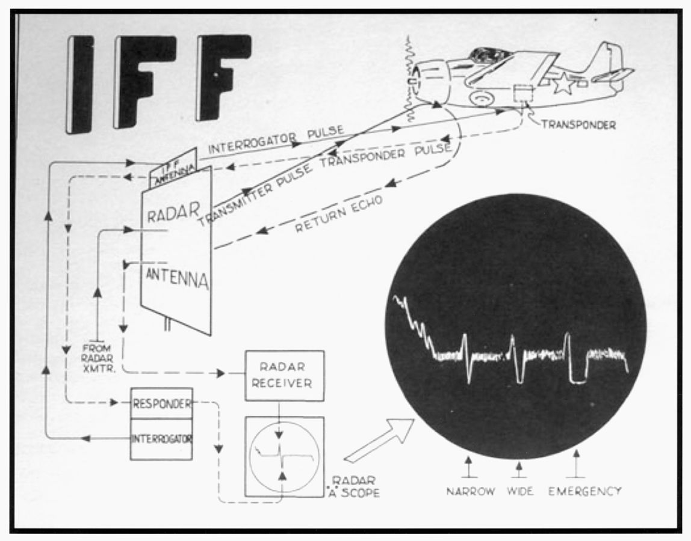
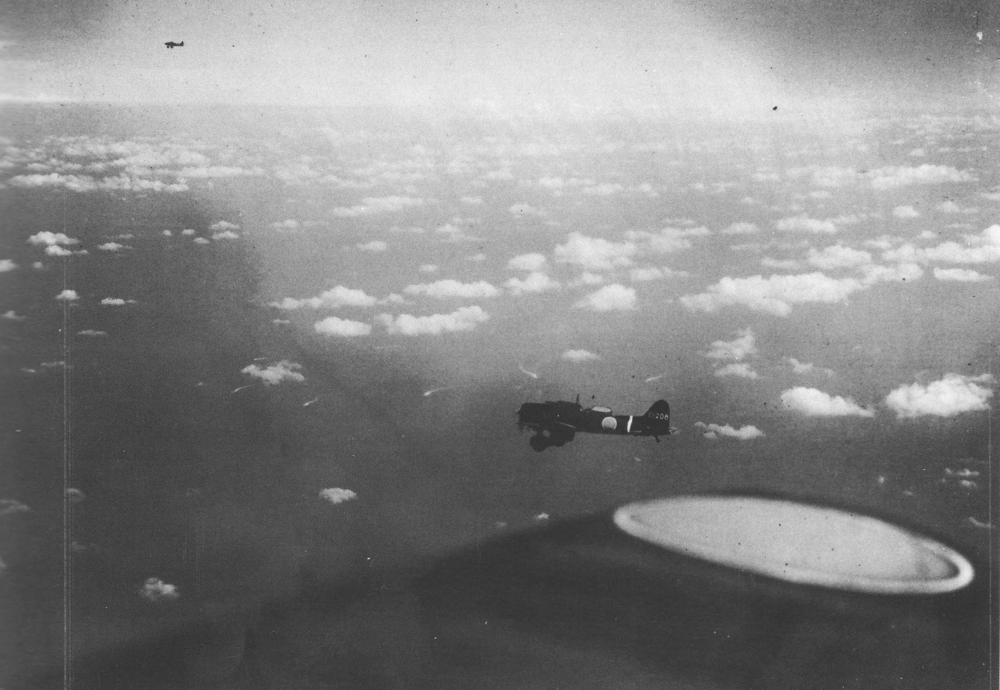
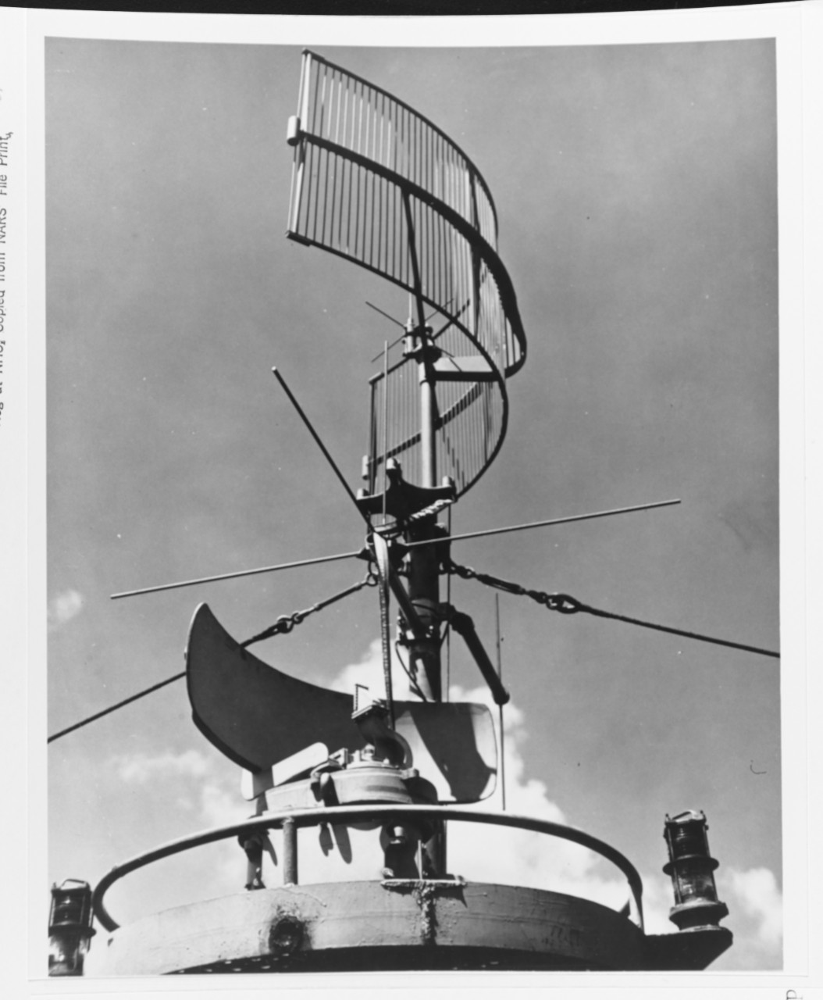
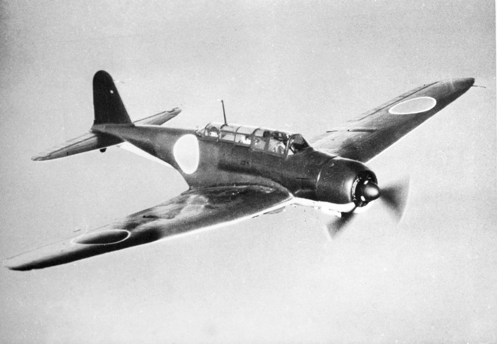

레이더 개발 이야기 (55) - 친구인가 적인가?
게시: 2023-11-16T06:30:04+09:00
<If Friendly or Foe> 전편에서 언급했듯이, 당시의 CXAM radar는 손으로 일일이 안테나를 돌려가며 한참동안 그 목표물을 추적 관찰하면서 방위각과 거리, 속도와 방향을 계산하고 그래프를 보고 고도를 추측해야 하는 물건. 따라서 100여개의 목표물을 동시에 자동으로 추적하며 수십개의 목표물과 동시 교전을 할 수 있는 현대적 Aegis radar와는 차원이 달랐음. 무엇보다, 여러 대의 적 편대가 따로 따로 나타날 경우 레이더 운용사는 정말 손발이 바빠질 수 밖에 없었음. 당시 항모의 공중전 상황에서 2개 이상의 편대를 추적할 일이 많았을까 라고 생각해보면 당연히 있었음. 왜냐하면 적기 뿐만 아니라 아군 항모를 지켜주는 CAP (Combat Air Patrol) 전투기들이 항상 있었기 때문. 아군 CAP을 적기 쪽으로 유도, 즉 벡터(vector)를 해주려면 아군 CAP의 위치를 항상 알고 있어야 했으므로 CXAM radar 운용사는 언제나 계속 바빴음. 그래서 2명의 소위와 2명의 부사관이 번갈아가며 근무를 해야 했음. 그런 상황에서 레이더 스코프 상의 신호가 아군인지 적군인지만 자동으로 구분할 수 있어도 레이더 운용사의 부담을 크게 줄일 수 있었음. 그래서 영국도 미국도 각각 독자적으로 IFF (If Friendly or Foe), 즉 피아식별 장치를 개발해서 사용하기 시작했음. 이 IFF는 무척 간단한 것으로서, 항공기에 부착해놓은 무선송신기(transponder)가 핵심. 이 무선송신기는 레이더파에 반응하여 3개의 미리 정해진 신호를 몇 초 간격으로 송신하게 되어 있었음. 레이더 스코프에는 그 신호가 위로 치솟은 pip 신호에 뒤이어 아래로 내리꽂은 pip 신호로 나타나게 되어 있었으므로 레이더 관제사는 그 항공기가 아군이라는 것을 쉽게 알 수 있었던 것.

(당시 미해군이 사용하던 Mark III IFF system. 저 A-scope 화면에 위로 치솟은 pip 신호 바로 뒤에 아래로 내리꽂는 pip 신호가 IFF 응답 신호. 당연히 적의 해킹(?) 위험이 있으므로 항공기의 무선송신기가 어떤 신호를 보내야 하는지는 매일 바뀌었고 그에 따라 IFF를 세팅. 저 IFF 신호는 세 개의 아래 방향 pip을 어떤 순서, 어떤 길이로 줄지에 따라 조합을 이룰 수 있었고, 총 6개의 조합 중 어떤 조합을 쓸 것인지 그날그날 정했음. 운용하는 지휘관에 따라서, 어떤 신호는 아군 상공을 지키는 CAP에게, 어떤 신호는 적 항모를 때리러 출격하는 폭격기에게 부여할 수도 있었음. 나중에 영국군과 기술협력을 하게 되면서는 영국군과 동일한 IFF를 정하여 통합.) 이렇게 좋은 IFF가 있었으니 산호해 해전에 임했던 USS Lexington의 레이더 운용사는 얼마나 좋았을까? 좋았음. 그러나 문제는 이 IFF를 장착한 항공기의 숫자가 렉싱턴과 요크타운 2대의 항모 전체 함재기 130여대 중에서 딱 6대 뿐이었다는 점. 그나마 IFF를 장착한 와일드캣 전투기 2대가 초반 공중전에서 격추되어 버림. 일이 이렇게 되다보니 먼 곳에서 뭔가 항공기가 나타나기만 하면 항상 적기로 간주하고 가뜩이나 부족한 CAP 전투기를 그 방향으로 보내 확인을 해야 했음. <어둠 속 착함 대소동> 일본 항모 기동부대와 원거리에서 서로의 위치를 찾으며 벌어진 산호해 해전이 한창 진행 중이던 1942년 5월 7일 저녁, USS Lexington의 전투기 관제사 역할을 수행하던 길(Gill) 대위는 정신없이 바빴음. 원거리에서 뭔가 bogey(미확인 항공기)가 레이더 스코프에 뜰 때마다 아군 함대 상공의 CAP의 연료 및 탄약 잔량을 확인하고 그에 따라 그 방향으로 보내 확인해야 했기 때문. 일본 해군도 미해군과 동일하게 근처에 적 항모 기동부대가 있다는 것은 알고 있었으나 그 정확한 위치는 몰랐기 때문에 작은 공격 편대 여러 개를 다양한 방향으로 보내 탐색을 하고 있었으므로 길 대위는 더더욱 바빴음.

(1942년 5월 7일 오전 미해군 항모를 찾아 항모 쇼가꾸에서 이함한 Aichi D3A Type 99 급강하 폭격기. 꼬리에 한 줄의 흰색 선이 칠해진 것이 쇼가꾸의 식별 표시. 함께 함대를 이룬 주이가꾸의 식별 표시는 2줄의 흰색선. 이들은 이 날 미해군 구축함 1척과 함께 해상 급유용 유조선 Neoshaw에 폭탄을 잔뜩 먹이고 돌아와 '미해군 항모를 대파시켰다, 지금쯤 침몰했을 것'이라고 보고. 실제로는 대파된 채 며칠 뒤까지 그냥 떠있었고, 미해군의 다른 군함이 선원들을 옮겨 태운 뒤 어뢰로 자침시킴.) 레이더 유도를 받은 미해군 와일드캣 전투기들에게 사냥만 당했을 뿐, 결국 미해군 항모들을 찾지 못한 일본 급강하 폭격기와 뇌격기 편대들은 해가 지고 어둠이 깔리면서 마음이 더욱 급해짐. 이젠 미해군 항모를 찾기보다는 자신들의 모함을 찾는 것이 더 절박한 문제가 된 것. 미해군은 이때 YE-ZB 'Hayrake' system이라는 전파 유도 항법 장치를 가지고 있었고, 이를 통해 아군 함재기들이 비교적 쉽게 모함으로 돌아올 수 있도록 해주고 있었음. (이에 대해서는 아래 링크 참조.) https://nasica1.tistory.com/403
항공모함은 대체 어디에 ? (1) - 영화 '생존자들'의 재미있는 기술적 배경
경부 고속도로를 타고 차를 몰다 보면 머리 위로 미군 헬리콥터가 경부 고속도로를 따라 날아다니는 모습을 흔히 볼 수 있습니다. 맞는 이야기인지 모르겠으나, 제가 알기로는 미군 헬리콥터가
nasica1.tistory.com

(USS Hornet (CV-12)의 마스트에 설치된 갈퀴 모양의 YE Hayrake 안테나.) 일본 해군도 이와 비슷한 전파 유도 장치를 갖추고는 있었으나 미군 것에 비해 문제가 많았고 잘 작동하지 않는 경우가 잦았음. 일본 조종사들은 미군의 무선 통신이 자신들의 전파 유도 장치에 jamming을 일으키는 것 같다고 주장하기도. 아무튼 뿔뿔이 흩어져 애타게 모함을 찾던 일본 함재기들은 조금이라도 더 오래 날기 위해 연료를 아끼고자 원래 미해군 항모에 투하할 예정이었더 폭탄과 어뢰를 바다에 버릴 정도로 다급했음. 그런 상황에서 어둑어둑한 하늘과 바다를 헤매던 일부 일본 함재기들은 마침내 항모를 발견. 반가운 마음에 접근해서 보니 마침 다른 함재기들도 착함 순서를 기다리며 항모 주변에서 원을 그리며 날고 있었음. 그래서 이들은 그렇게 원을 그리며 날던 다른 함재기들의 행렬에 합류하며 자신들도 착함하겠다는 불빛 신호를 보냈고, 그 중 1대는 실제로 항모에 착함을 위해 하강을 시작.

(당시 산호해 해전에서 활약한 일본 해군 뇌격기 Nakajima B5N "Kate". 요크타운에 착함하려고 했던 것이 이것인지 급강하폭격기인지는 불분명.) 그런데 갑자기 항모 주변에 있던 순양함과 구축함에서 대공포가 날아오기 시작. 깜짝 놀란 일본 해군 조종사들은 이 항모가 한 시간 전 자신들이 격침시키고자 그토록 찾아 헤맸던 USS Yorktown라는 것을 깨달음. 이미 폭탄과 어뢰를 바다에 던져 버린 뒤라 공격할 수도 없었으므로 이들은 황급히 도주하여 다시 모함을 찾아 어둠 속을 헤맴. 다행(?)히 이들 대부분은 결국 모함을 찾아냈으나, 그 중 11대는 어둠 속이라 거의 불시착하듯 착함. 이 날 저녁에 출격했던 폭격기와 뇌격기 26대 중에서 무려 21대가 미해군 와일드캣에게 격추되거나, 길을 잃고 돌아오지 못하거나, 이렇게 불시착하면서 파괴됨. 한편, 이 사건은 미해군 항모 요크타운 입장에서도 등에 식은 땀이 흐를 상황. 적기가 폭탄이나 어뢰를 장비하지 않고 있었기에 망정이지, 꽤 장시간 적기의 위협에 무방비 상태로 노출되었기 때문. 요크타운에서는 왜 레이더를 가지고도 자기 갑판에 착함하려는 일본 함재기들을 미리 막아내지 못했을까? 실은 바로 옆에 있던 USS Lexington에서도 함대 주변을 알짱거리는 정체불명의 항공기들을 레이더 상에서 보고 있었고, 혹시 일본기일 수도 있었으므로 와일드캣을 보내 확인을 해보려 했으나, 이미 어둠이 깔린데다 구름까지 끼어 아무 것도 찾지 못했던 것. 이 사건은 IFF가 제대로 갖추어져 있었다면 있을 수 없었던 상황. 위에서 언급한 것처럼 막 착함하려는 항공기가 실은 일본 함재기라는 것을 눈치챈 것은 그 주변에서 항모를 호위하고 있던 순양함 또는 구축함. 이들이 화들짝 놀라 대공포를 쏘아대자, 일본 함재기 못지 않게 깜놀했던 것은 일본 함재기 바로 앞에서 착함하려 내려 오던 와일드캣 조종사들. 그들 중 하나는 너무 놀라 무선 침묵을 깨고 무전기에 이렇게 외쳤다고. "왜 날 쏘는 거야? 이번엔 내가 뭘 잘못한 거지?" (What are you shooting at me for? What have I done now?) 이제 바로 인근에 적의 항모 전단이 있다는 것을 확실히 알게 된 미일 양측 함대는 동이 트자마자 공격 편대를 보내 결판을 보기로 함. (다음 주에 계속)